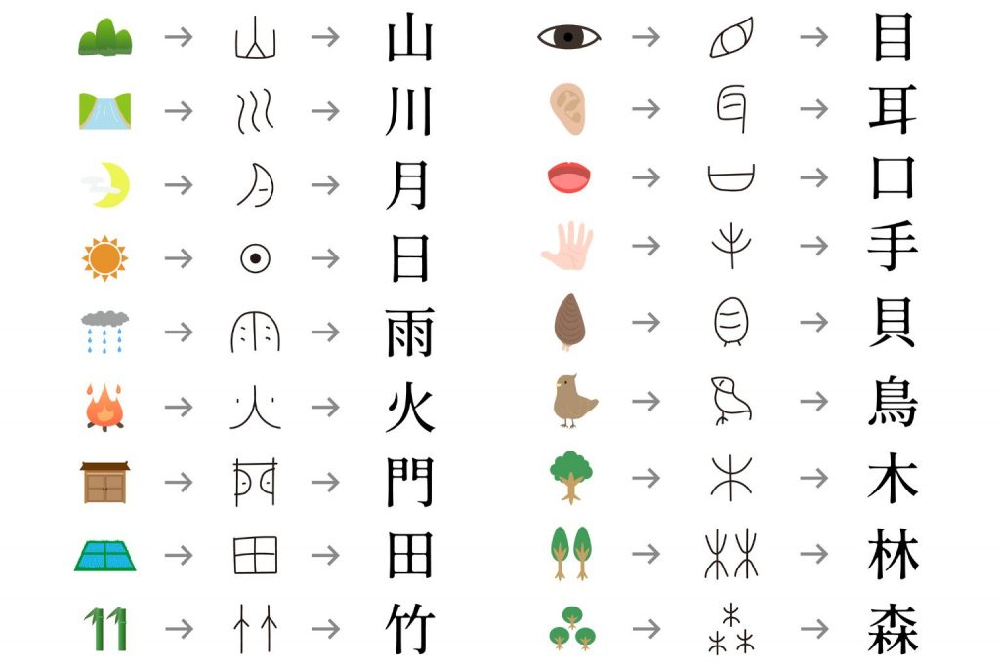

Kanji is the Japanese chaaracter that is originated from China.
Basic Kanji are created by the actual shape of the meaning. As you can see for example on the top left, there is a mountain image, and from the image, Chinese created the letters that means mountain. Combining Kanji can create many words. For example Kanji is written as 漢字(かんじ), 漢 means Chinese, and 字 means letter. Simple!! Kanji is more likely to have multiple way to read. There are ways that read in the same way as in Chinese (written in katakana notation), and the others that read with Japanese sounds in which the Japanese meaning is applied to the kanji characters (written in hiragana notation).
In elementry school, Japanese kids learn 1026 kanjis. Today, I will teach you the kanji that we learn in first grade!
| Kanji | reading, meaning | Kanji | reading, meaning |
|---|---|---|---|
| 一 | イチ(ichi)、イツ(itsu) ひと(hito)、ひとつ(hitotsu) |
二 | ニ(ni)、 ジ(ji) ふた(futa)、ふたつ(futatsu) |
| one | two | ||
| 三 | サン(sans) み(mi)、みつ(mitsu)、みっつ(mittsu) |
四 | シ(shi) よ(yo)、よん(yon)、よっつ(yottsu) |
| three | four | ||
| 五 | ゴ(go) いつ(itsu)、いつつ(itsutsu) |
六 | ロク(roku) む(mu)、むっつ(muttsu) |
| five | six | ||
| 七 | シチ(shichi) なな(nana)、ななつ(nanatsu) |
八 | ハチ(hachi) や(ya)、やっつ(yattsu)、よう(you) |
| seven | eight | ||
| 九 | キュウ(kyu)、ク(ku) ここの(kokono)、ここのつ(kokonotsu) |
十 | ジュウ(ju) とお(too)、と(to) |
| nine | ten | ||
| 百 | ヒャク(hyaku) もも(momo) |
千 | セン(sen) ち(chi) |
| hundred | thousand | ||
| 日 | ニチ(nichi)、ジツ(jitsu) ひ(hi)、か(ka) |
月 | ゲツ(getsu)、ガツ(gatsu) つき(tsuki) |
| day/sunlight/Sunday | moon/month/Monday | ||
| 火 | カ(ka) ひ(hi)、ほ(ho) |
水 | スイ(sui) みず(mizu) |
| fire/Tuesday | water/Wednesday | ||
| 木 | ボク(boku)、モク(moku) き(ki)、こ(ko) |
金 | キン(kin)、コン(kon) かね(kane)、こがね(kogane) |
| tree/Thursday | money/gold/Friday | ||
| 土 | ド(do)、ト(to) つち(tsuchi) | 田 | デン(den) た(ta) |
| soil/Saturday | rice field | ||
| 山 | サン(san)、セン(sen) やま(yama) |
川 | セン(sen) かわ(kawa) |
| mountain | river | ||
| 林 | リン(rin) はやし(hayashi) |
森 | シン(shin) もり(mori) |
| woods | forest | ||
| 石 | セキ(seki) いし(ishi) |
天 | テン(ten) あめ(ame)、あま(ama)、そら(sora) |
| stone | sky/heaven | ||
| 気 | キ(ki)、ケ(ke) | 空 | クウ(ku) そら(sora)、から(kara)、あく(aku)、すく(suku) |
| feeling/atmosphere | sky/empty | ||
| 雨 | ウ(u) あめ(ame)、あま(ama) | 夕 | セキ(seki) ゆう(yu)、ゆうべ(yube) |
| rain | evening | ||
| 草 | ソウ(sou)、くさ(kusa) | 花 | カ(ka) はな(hana) |
| grass | flower | ||
| 竹 | チク(chiku)たけ(take) | 文 | ブン(bun)、フン(fun) ふみ(fumi)、あや(aya) |
| bamboo | writing | ||
| 字 | ジ(ji) あざ(azana)、あざな(azana) |
本 | ホン(hon) もと(moto) |
| letter | book/sentence | ||
| 円 | エン(en) まるい(marui) |
玉 | ギョク(gyoku) たま(tama) |
| circle/yen | ball/coin | ||
| 年 | ネン(nen) とし(toshi) |
音 | オン(on)、イン(in) おと(oto)、ね(ne) |
| year/age | sound | ||
| 学 | ガク(gaku) まなぶ(manabu) |
校 | コウ(kou)、カウ(kau) |
| learning | school | ||
| 先 | セン(sen) さき(saki) |
生 | セイ(sei)、ショウ(shou) いき(iki)、うむ(umu)、はえる(haeru)、なま(nama)、き(ki) |
| ahead/destination | life/birth/student | ||
| 赤 | セキ(seki) あか(aka) |
白 | ハク(haku)、ビャク(byaku) しろ(siro) |
| red | white | ||
| 青 | セイ(sei)、ショウ(shou) あお(ao) |
人 | ニン(nin)、ジン(jin) ひと(hito)、びと(bito) |
| blue | person | ||
| 男 | ダン(dan) お(o)、おとこ(otoko) |
女 | ジョ(jo) おんな(onna) |
| male | female | ||
| 子 | シ(si)、ス(su) こ(ko)、ね(ne) |
目 | モク(moku)、ボク(boku) め(me)、ま(ma) |
| children | eye | ||
| 耳 | ジ(ji) みみ(mimi) |
口 | コウ(kou)、ク(ku) くち(kuchi) |
| ear | mouth | ||
| 手 | シュ(shu) て(te)、た(ta) |
足 | ソク(soku) あし |
| hand | leg/foot | ||
| 犬 | ケン(ken) いぬ(inu) |
貝 | バイ(bai) かい(kai) |
| dog | shell | ||
| 虫 | チュウ(chu) むし(mushi) |
王 | ギョク(gyoku) たま(tama) |
| insect | king | ||
| 力 | リキ(riki)、リョク(ryoku) ちから(chikara) |
町 | チョウ(chou) まち(machi) |
| power | town | ||
| 村 | ソン(son) むら(mura) |
車 | シャ(sha) くるま(kuruma) |
| village | car | ||
| 大 | ダイ(dai) おおきい(ookii) |
中 | チュウ(chu)、ジュウ(ju) なか(naka) |
| big | middle | ||
| 小 | ショウ(sho) ちいさい(chisai)、こ(ko) |
上 | ジョウ(jo)、ショウ(sho) うえ(ue)、うわ(uwa)、かみ(kami)、あげる(ageru)、のぼる(noboru) |
| small | up | ||
| 下 | カ(ka)、ゲ(ge) した(shita)、しも(shimo)、さがる(sagaru)、くだる(kudaru) |
左 | サ(sa) ひだり(hidari) |
| down | left | ||
| 右 | ユウ(yu)、ウ(u) みぎ(migi) |
正 | セイ(sei)、ショウ(sho) ただしい(tadashii)、まさ(masa) |
| right | correct/right | ||
| 出 | シュツ(shutu) でる(deru)、だす(dasu) |
入 | ニュウ(nyu) いれる(ireru)、はいる(hairu) |
| exit | enter | ||
| 立 | リツ(ritsu) たつ(tatsu) |
見 | ケン(ken) みる(miru) |
| stand | look | ||
| 休 | タイ(tai)、テイ(tei) からだ(karada) |
早 | ソウ(sou)、サッ(ssa) はやい(hayai) |
| body | quick | ||
| 名 | メイ(mei)、ミョウ(myou) な(na) |
糸 | シ(si) いと(ito) |
| name | string |